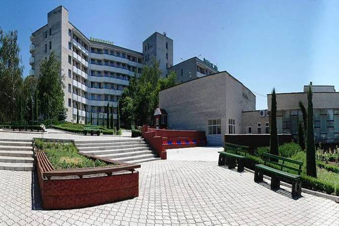
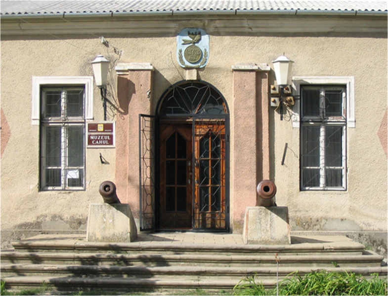
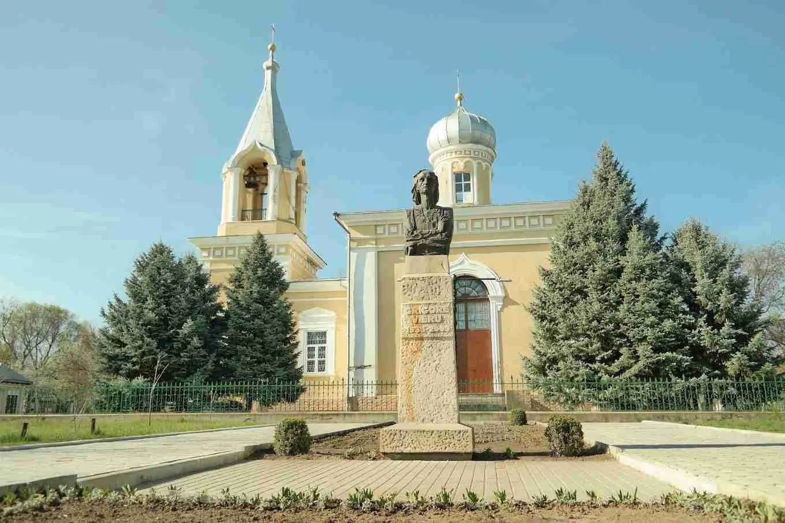

Достопримечательности Кахула

Курорт Нуфэрул Алб
Знаменитый бальнеологический курорт с лечебными грязями и минеральными водами. Идеальное место для оздоровления и отдыха.

Кагульский исторический музей
Музей с богатой коллекцией экспонатов, рассказывающих об истории города и региона с древнейших времен до наших дней.

Собор Святого Архангела Михаила
Православный храм, построенный в XIX веке, является архитектурной доминантой города и важным духовным центром.